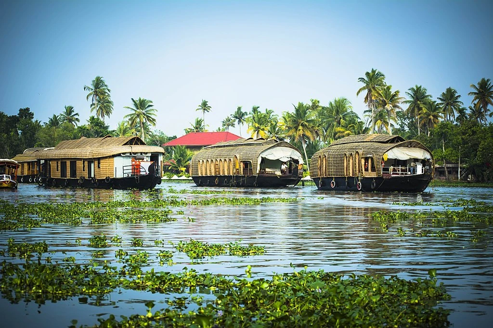

ALAPPUZHA(or ALLEPPEY)
Alappuzha or Alleppey is the administrative headquarters of Alappuzha district in state of Kerala, India. The Backwaters of Alappuzha are one of the most popular tourist attractions in India which attracts millions of domestic and international tourists. Alleppey is a city and a municipality in Kerala with an urban population of 174,164 and ranks third among the districts in literacy rate in the state. In 2016, the Centre for Science and Environment rated Alappuzha as the cleanest town in India.Alappuzha is considered to be the oldest planned city in this region and the lighthouse built on the coast of the city is the first of its kind along the Laccadive Sea coast.
Alleppey Backwaters
The Backwaters of Alappuzha are one of the most popular tourist attractions in India which attracts millions of domestic and international tourists
Alappuzha Beach
Alappuzha Beach is a beach in Alappuzha town and a tourist attraction in Kerala, India.Beach has an old pier which extend to sea is over 150 years old.Alappuzha beach host many events annually like Alappuzha beach festival,Sand art festival and many more
Light house
The Alappuzha Lighthouse (or Alleppey Light) is situated in the coastal town of Alappuzha, Kerala. It was built in 1862 and is a major tourist attraction. Visitors are allowed between 1500 hours and 1630 hours on every weekday at an admission fee of 20 rupees for Indian citizens and 50 rupees for foreigners. This is the first of its kind in the Arabian sea coast of Kerala

Marari beach
Mararikulam is connected by rail and has a railway station by the same name. It is also well connected by road. NH 66 passes through S.L.Puram, which is 5 km to the east of Mararikulam. Nearest airport is Cochin International Airport. It was rated as one of the worlds top five HAMMOCK BEACH by National Geographic survey
Ambalapuzha sree krishna temple
Ambalappuzha Sree Krishna Swamy Temple is an Indian Hindu temple dedicated to Krishna at Ambalappuzha in Alappuzha district of Kerala. The temple is believed to have been built during 15th century AD by the local ruler Chembakasserry Pooradam Thirunal-Devanarayanan Thampuran. It is one of the seven greatest temples in Travancore.